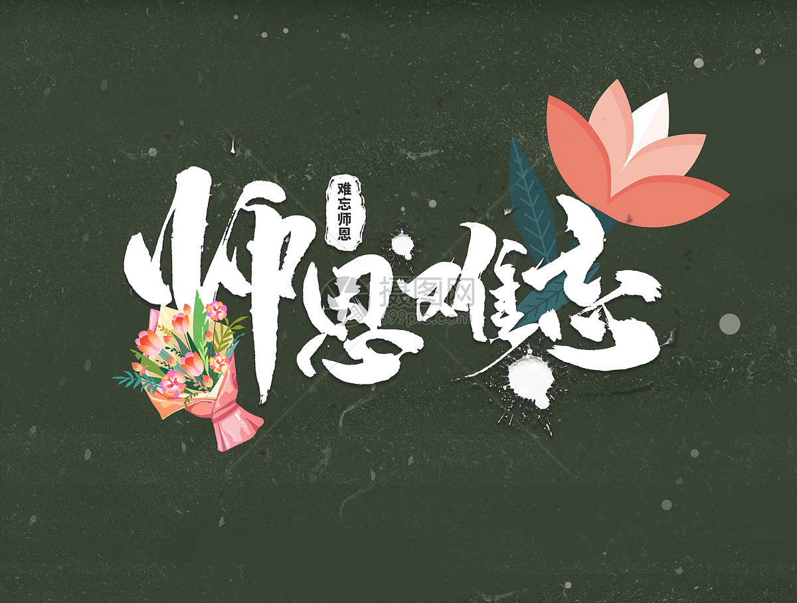

我国尊师重教的传统由来已久，古代便有 “弟子事师，敬同于父” 的理念，但现代意义上的教师节确立历经多年探索。 1981 年，教育家叶圣陶等人首次提出设立教师节的建议，此后经过多次研讨与呼吁，1985 年 1 月 21 日， 第六届全国人大常委会第九次会议正式决议，将每年的 9 月 10日定为我国教师节。这一日期的选择，既避开了传统节日与寒暑假， 又恰逢新学期伊始，便于学生以崭新姿态表达对教师的敬意，更旨在通过法定节日的形式， 肯定教师在教育事业与社会发展中的重要作用，弘扬尊师重教的社会风尚。
教师这一职业的起源可追溯至人类文明早期，伴随知识传递需求而生。西周时期， 官学体系初步形成， “师氏”“保氏” 等官职专门承担教育贵族子弟的职责，教授礼、乐、射、御、书、数等内容， 成为早期制度化的教师角色。 春秋时期，私学兴起，孔子打破 “学在官府” 的垄断，主张 “有教无类”，广收弟子传授学问， 开创了民间办学与私人教师的先河， 也奠定了教师 “传道、授业、解惑” 的核心职能。此后，不同朝代的教师称谓与职责虽有演变 —— 如汉代的 “博士”、 宋代的 “书院山长” 等，但始终以知识传授、品德培育为核心，直至现代，教师被赋予更明确的职业定义，成为具备专业素养、 承担教育教学任务、促进学生全面发展的专门职业，其角色也从单纯的知识传递者拓展为学生成长的引导者、合作者。
教师节期间，各地会围绕 “尊师重教” 主题开展形式多样的活动，覆盖学校、家庭与社会多个层面。在学校，常见的活动包括教师节表彰大会，表彰优秀教师、 师德标兵等，肯定教师的工作成果；学生自主组织的感恩活动，如制作手工贺卡、书写感谢信、编排文艺节目（合唱、朗诵、情景剧等）， 用真挚的方式表达对教师的感谢；部分学校还会举办 “师生座谈会”“教师开放日”，让学生与教师深入交流，或邀请家长走进校园，共同感受教师的日常工作。在社会层面，一些地区会组织 “慰问一线教师” 活动，为偏远地区、乡村教师送去关怀与物资；企业也可能推出针对教师的优惠政策，如景区门票减免、购物折扣等， 以实际行动致敬教师群体，这些活动不仅增进了师生情感，更在全社会营造了尊重教师、重视教育的浓厚氛围。
更多内容可以百度一下